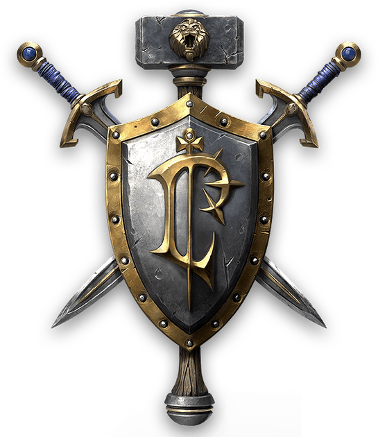
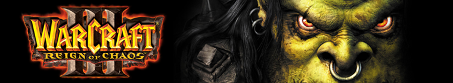
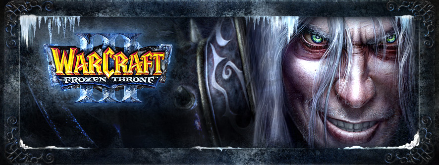
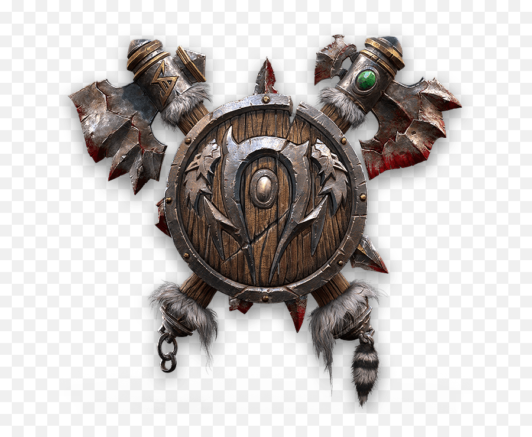
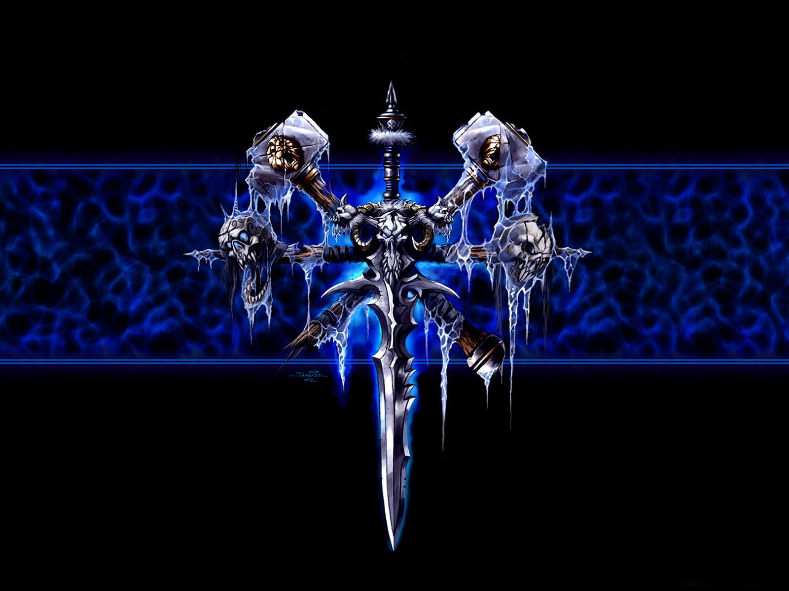
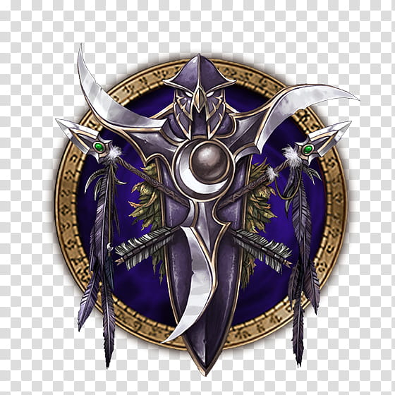

The Human Alliance

A resilient coalition of humans, elves, and dwarves. Led by noble Paladins and Archmages, they rely on heavy plate armor, powerful magic, and fortified peasant militias to hold the line.


Warcraft III is a landmark high-fantasy real-time strategy (RTS) game developed by Blizzard Entertainment. Instead of just commanding massive, faceless armies, the game uniquely blends traditional strategy with role-playing elements. Players harvest resources, build bases, and lead forces across four distinct factions: the noble Humans, the shamanic Orcs, the corrupt Undead, and the reclusive Night Elves.

A resilient coalition of humans, elves, and dwarves. Led by noble Paladins and Archmages, they rely on heavy plate armor, powerful magic, and fortified peasant militias to hold the line.

Fearsome warriors led by Thrall, seeking a new destiny in the barren lands of Kalimdor. They favor brute physical strength, Shamanistic lightning, and the raw power of the Tauren.

A horrifying army of the walking dead, commanded from the frozen north by the Lich King. They blight the very ground they walk upon and raise fallen enemies to bolster their ranks.

Ancient, shadowy guardians of the forest who strike from the trees. Empowered by the moon goddess Elune, their buildings can uproot and walk, and their archers melt into the shadows at night.